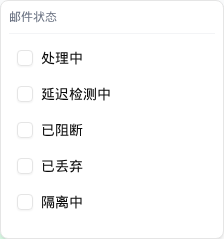

| 所属组件 | 2.3 日志表格 InvestigationLogsTable |
| 主文件 | index.html#component-2-3 |
| 触发路径 | 层级0 → 点击表头的「邮件状态」/「收发类型」/「邮件类型」（三列可筛，带 Filter 图标） |
| demo 源码 | investigation-logs-table.tsx L388–444（FilterHeader） |

max-h-48）。| 列 | filterKey | 选项数 | 选项 | chip 配色 |
|---|---|---|---|---|
| 邮件状态 | emailStatus | 13 | 处理中 / 延迟检测中 / 已阻断 / 已丢弃 / 隔离中 / 待审核 / 投递中 / 投递成功 / 投递失败 / 召回中 / 召回成功 / 召回失败 / 已删除 | 琥珀 bg-amber-50 |
| 收发类型 | direction | 3 | 接收 / 外发 / 域内 | 蓝 bg-blue-50 |
| 邮件类型 | mailType | 11 | 见层级1 的 11 类 | 绿 bg-green-50 |
| 元素 | 行为 |
|---|---|
| 表头按钮 | 有筛选时文字与 Filter 图标变蓝 + 右侧计数 Badge（如「2」） |
| 「清除筛选」（Popover 内） | 仅有筛选时渲染；清空该列 |
| 筛选 chips（表格上方） | 「表头筛选:」+ 每个选中值一个 chip（X 可单独移除）+ 末尾「清除筛选」清空全部三列 |
| 与搜索区的关系 | 表头筛选（tableFilters）与搜索区筛选（filterValues）是两套独立状态，AND 叠加；「重置」只清搜索区，不清表头筛选 |
| 比对项 | demo 实际 DOM | 提取的 HTML | 是否一致 |
|---|---|---|---|
| 根节点 | div[data-slot=popover-content].w-56.p-2 | 同 | 一致 |
| 后代节点数 | 43 | 43 | 一致 |
| 选项数 | 13（邮件状态） | 13 | 一致 |
| 选项容器 | max-h-48 overflow-y-auto | 同 | 一致 |
| 「清除筛选」 | 无筛选时不渲染 | 不包含（与实际一致） | 一致 |